works
Savvy Scorekeeper


 



► Savvy Scorekeeper is a mobile app that makes it easier to keep score during a card game.
Currently live on the App Store for free, it explores ways to show the state of a card game and how to have intuitive scoring interfaces.
Progress
Currently, Gin Rummy, Hearts, Game History and Settings are in the live mobile app. In the works are a revision to how Gin is scored and Oh Hell's basic scoring system. Farther into the future are the adding of Cribbage, permanent customizable players, and statistics.
I start my process by sketching out basic wireframes on paper, then translating those to Figma. From there, revisions are done after basic implementation by the software engineer. Through creating this app, my methods have changed from using the Adobe suite to using Figma due to increased shareability.
Style and Feel
My aim for the app was to create a warmer feeling, reflecting the convival feeling one gets when playing cards. This led me to using texture to warm up flat planes as well as using a Gill Sans typeface.
When choosing a color palette, I wanted something that recalled classic card colors (red, white, yellow) without being too boring. I stayed within the same realm by using primary colors, but replaced red and white with various shades of blue.
Integral to the feel of the app are the illustrations, whose styles are meant to reference physical media such as paper collages or paint. The vectorized and textured shapes in illustrations of the win screen or games are examples of the former, while the examples of the latter are the painted portraits of birds.